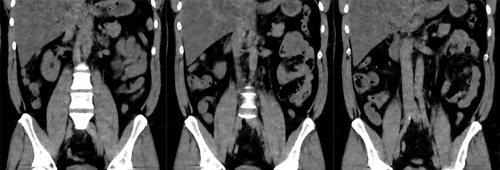

Ficha del catálogo
Apendicitis aguda (tomografía)
- Sistema
- Digestivo
- Modalidad
- TC
- Región
- Abdomen
- Dificultad
- Intermedio
Inflamación del apéndice cecal y causa más frecuente de abdomen agudo quirúrgico. La tomografía tiene una precisión muy alta para confirmarla y, sobre todo, para detectar complicaciones que cambian el abordaje quirúrgico.
Técnica
Tomografía de abdomen y pelvis, habitualmente con contraste intravenoso. En pacientes jóvenes y en embarazadas se prefiere iniciar con ultrasonido o resonancia para evitar la radiación.
Qué observar
- Apéndice dilatado, con diámetro transverso mayor de 6 mm
- Engrosamiento y realce de la pared apendicular tras el contraste
- Infiltración de la grasa periapendicular, que aparece 'sucia' o con densidad aumentada
- Apendicolito: Calcificación densa en la luz del apéndice, presente en una parte de los casos
- Líquido libre en la fosa ilíaca derecha
- Signos de perforación: Gas extraluminal, absceso o colección organizada
- Diagnósticos alternativos que simulan apendicitis, como diverticulitis, adenitis mesentérica o patología ginecológica
Hallazgos
Apéndice cecal dilatado con engrosamiento parietal e infiltración de la grasa adyacente, hallazgos compatibles con apendicitis aguda.
Perlas
La posición del apéndice es muy variable (retrocecal, pélvica, subhepática) y eso explica por qué la clínica a veces engaña. Un apéndice inflamado en posición subhepática puede simular una colecistitis, y uno pélvico puede parecer patología ginecológica.
Diagnóstico diferencial
- Adenitis mesentérica
- Se ven múltiples ganglios aumentados en el mesenterio de la fosa ilíaca derecha con apéndice de calibre normal, sobre todo en niños y adultos jóvenes.
- Diverticulitis del colon derecho
- Se identifica un divertículo inflamado con engrosamiento parietal del colon y grasa infiltrada alrededor, con apéndice normal.
- Patología ginecológica aguda
- El origen del proceso está en el anejo o en el ovario, con quiste complicado, torsión o absceso tuboovárico, y el apéndice se identifica normal.
- Ileítis o enfermedad inflamatoria intestinal
- El engrosamiento parietal afecta al íleon terminal en un segmento largo, con realce mural estratificado y proliferación de la grasa mesentérica.
- Cólico renoureteral derecho
- Se demuestra una litiasis ureteral con dilatación del sistema colector y estriación de la grasa perirrenal, sin alteración apendicular.
- Apendagitis epiploica o infarto omental
- Aparece una lesión ovalada de densidad grasa con un anillo periférico denso adosada a la pared del colon, con apéndice normal.
Simuladores
- Un apéndice normal puede medir cerca de seis milímetros, sobre todo si contiene aire o contraste, por lo que el diámetro aislado no basta y debe acompañarse de otros signos inflamatorios.
- La posición variable del apéndice, retrocecal, pélvica o subhepática, hace que el proceso aparezca lejos del punto esperado y se confunda con otra patología.
- Un apendicolito puede verse en personas asintomáticas y no equivale por sí solo a apendicitis.
- El colapso del ciego y el gas intestinal dificultan la visualización del apéndice en ultrasonido, y su no visualización no equivale a normalidad.
Por modalidad
- TC
- Técnica de mayor precisión en el adulto: Identifica el apéndice, define complicaciones y ofrece diagnósticos alternativos cuando no hay apendicitis.
- US
- Primera opción en niños, jóvenes y embarazadas por la ausencia de radiación; con compresión gradual puede visualizar el apéndice inflamado y no compresible.
- RM
- Alternativa sin radiación en la embarazada y en el paciente joven cuando el ultrasonido no es concluyente.
- RX
- Aporta muy poco (solo de forma excepcional muestra un apendicolito o signos indirectos de íleo o de perforación).
Protocolo
Se realiza tomografía de abdomen y pelvis desde las bases pulmonares hasta la sínfisis púbica, habitualmente con contraste yodado intravenoso en fase portal, que resalta el realce de la pared apendicular y de los tejidos inflamados. El contraste oral y el rectal no son imprescindibles en la mayoría de los protocolos actuales. En ultrasonido se emplea un transductor lineal de alta frecuencia con la técnica de compresión gradual sobre el punto de máximo dolor, buscando una estructura tubular en fondo de saco ciego, no compresible, con un diámetro superior a seis milímetros y con hiperemia parietal en Doppler. En la embarazada se prioriza el ultrasonido y, si no es concluyente, la resonancia sin gadolinio.
Clasificación
Los signos clínicos se organizan con escalas de probabilidad como la de Alvarado, que puntúa síntomas, signos y datos de laboratorio para estratificar el riesgo y decidir si conviene realizar imagen. En la valoración radiológica se distingue la apendicitis no complicada de la complicada, que incluye perforación, absceso, plastrón y peritonitis, distinción que cambia el abordaje entre cirugía inmediata, drenaje percutáneo o tratamiento médico inicial. Algunos centros utilizan sistemas estructurados de informe que categorizan los hallazgos según el grado de certeza, desde apéndice normal hasta apendicitis inequívoca, pasando por estudios no concluyentes.
Errores frecuentes
- Diagnosticar apendicitis basándose solo en un diámetro superior a seis milímetros, sin exigir signos inflamatorios acompañantes.
- Informar como normal un estudio en el que el apéndice no se ha visualizado, sobre todo en ultrasonido.
- No buscar el apéndice en localizaciones atípicas cuando la clínica es sugestiva.
- Pasar por alto los signos de perforación, como el gas extraluminal y las colecciones, que cambian por completo el manejo.

apendicitis abdomen agudo tomografia apendice cirugia urgencia apendicolito